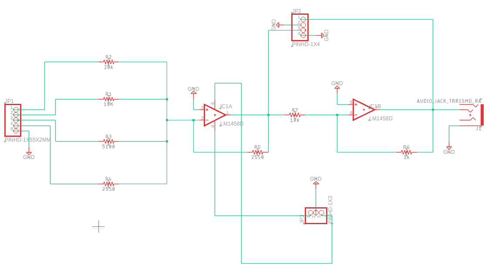
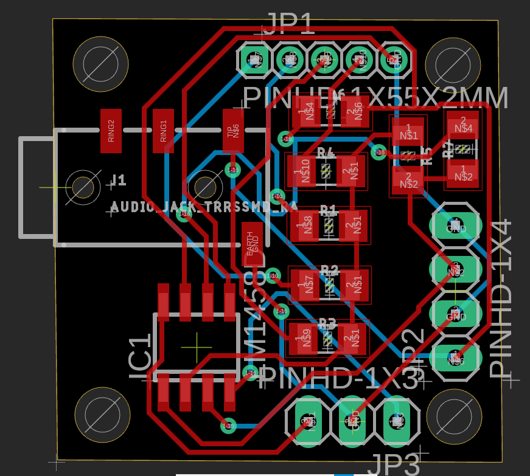
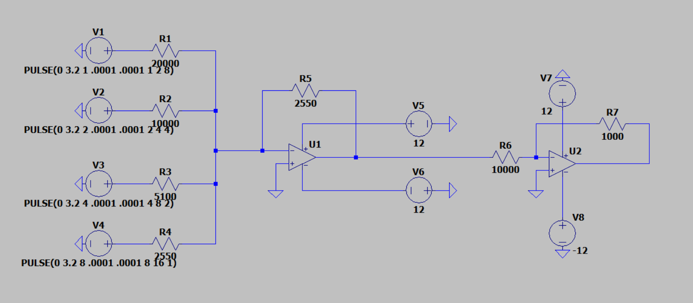
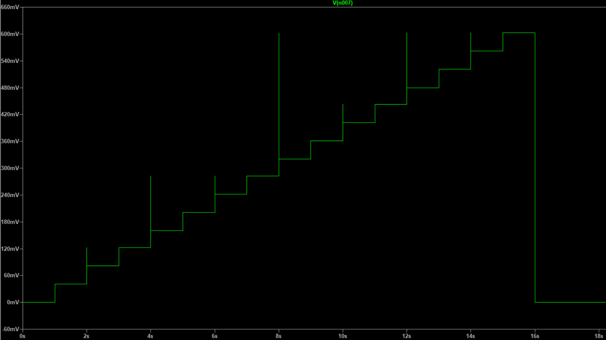

PCB Design · Analog Electronics · Schematic Capture
4-Bit DAC on a One-Inch PCB
A binary-weighted resistor digital-to-analog converter taken from LTspice simulation through schematic capture and a two-layer surface-mount layout in Fusion 360 — then built, and used to play digital audio from a laptop through a speaker.
The board
Small, dense, and all surface-mount.
PCB design
Schematic to routed board.
The schematic was captured in Fusion 360 and laid out on a one-inch, two-layer board. Every component is surface-mount.


Layout decisions
The size constraint drove most of the choices. Fitting an SOIC dual op amp, seven resistors, three headers, and a right-angle audio jack into one square inch meant going entirely surface-mount, with 1206 resistors as the smallest package that could still be hand-soldered reliably. The traces occupy both copper layers and cross through nine vias to reach every component without a dead end.
A ground pour was deliberately left off. For a four-bit converter at audio frequencies there is no return-path or thermal case for one, and omitting it kept the two-layer routing simpler to verify by eye.
Three headers separate the board's roles. A three-pin header supplies ground and the ±12 V rails to the op amps. A five-pin header takes the four input bits plus ground. A four-pin header exposes the output of each op amp stage for probing — so the summing stage and the scaling stage can be checked independently on a bench.
Circuit design
Weighting four bits with resistors.
A binary-weighted DAC treats each bit as its own input and gives it a resistor sized so that bit 3 carries twice the weight of bit 2, which carries twice the weight of bit 1, and so on. An inverting summing amplifier adds them.
With a 2.55 kΩ feedback resistor setting the top-bit gain at one, the remaining inputs needed 5.1 kΩ, 10 kΩ, and 20 kΩ to weight bits 2, 1, and 0 at one half, one quarter, and one eighth. Those were chosen from a stock list of available values rather than the exact ideal ratios — close enough that the step size stays uniform across the range. A second inverting stage with a 10 kΩ and 1 kΩ pair flips the summed output back to positive and scales it by one tenth to a level an audio input can take. Both op amps run on ±12 V rails.


Result
Digital audio in, sound out.
The board was assembled, tested stage by stage from the probe header, and then put to use: digital audio from a laptop was fed through the DAC and played out through a speaker via the on-board audio jack.
Documentation
Design report.
Covers the circuit design and LTspice simulation, the Fusion 360 schematic and layout, and the component selection behind the one-inch board.